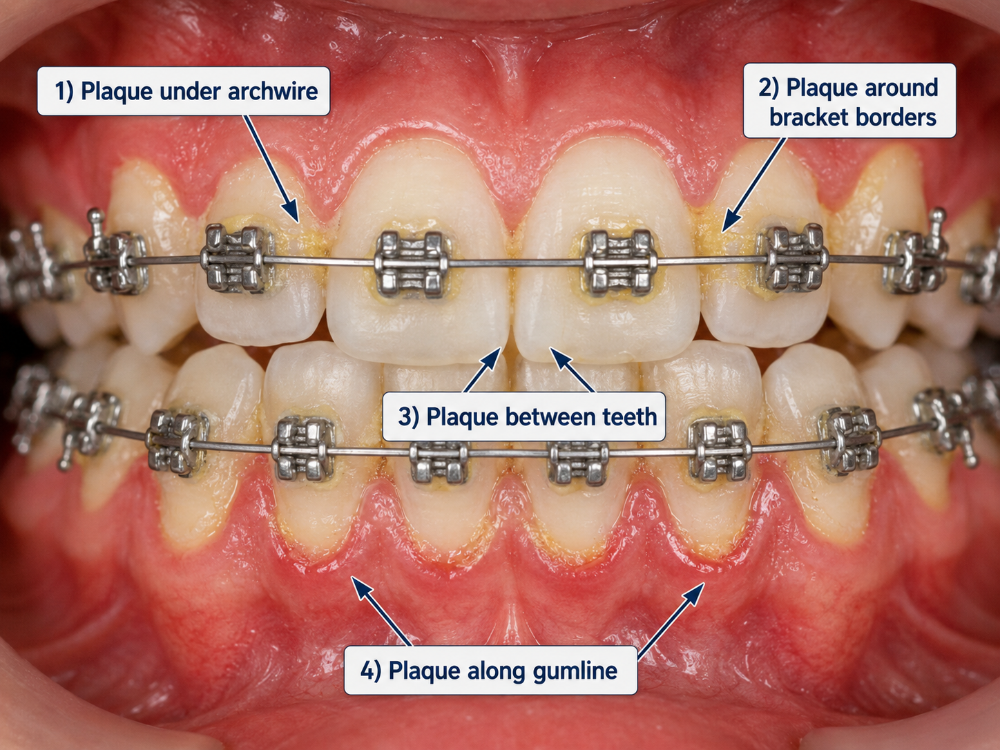
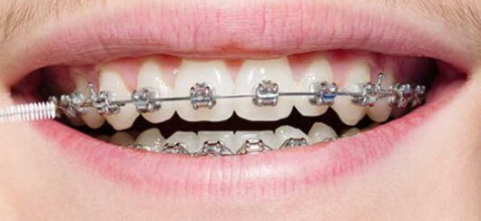
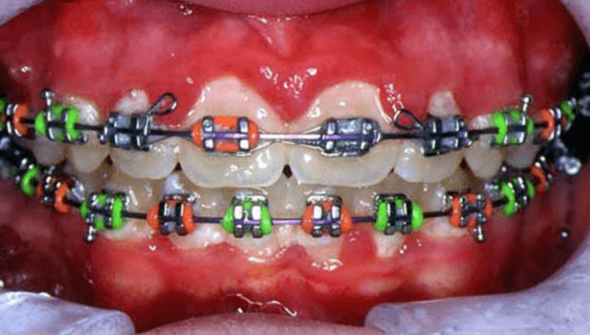
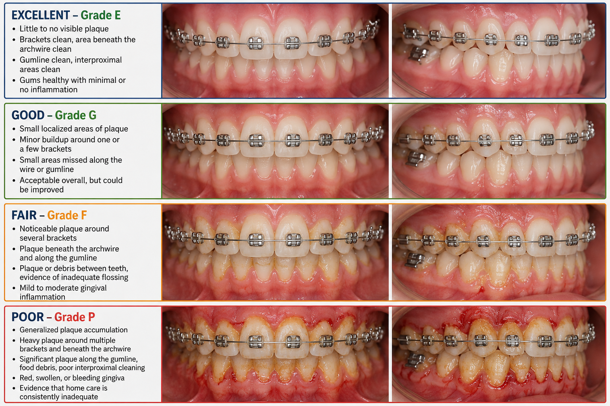
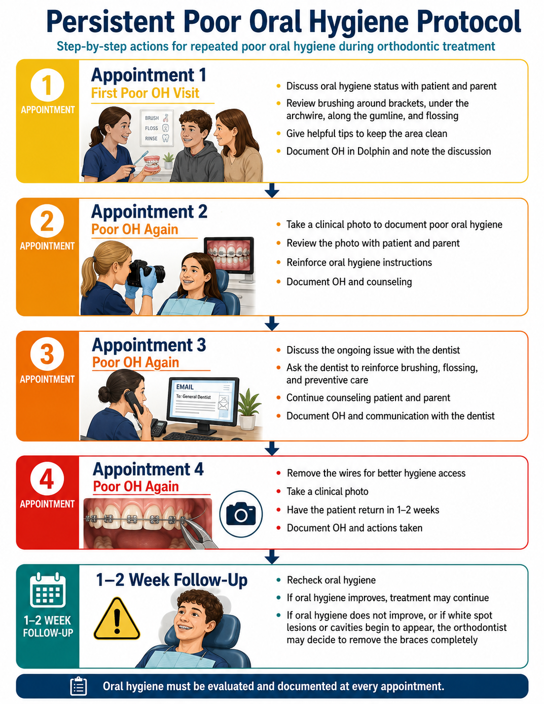

Every patient. Every adjustment. Graded, documented, and escalated when it does not improve.
Oral hygiene is evaluated at every orthodontic adjustment appointment, and documented every time — not only when it is poor. A blank OH box is an incomplete appointment.
The goal is to protect the teeth and gums throughout treatment, and to create a clear record showing that hygiene was monitored and addressed. A conversation that never made it into the chart did not, as far as the record is concerned, happen.
Evaluate before removing the archwire. Do not glance at the front surfaces and move on. Tap each number to see what you are looking for, and which tool fixes it.

The archwire hides plaque. Once removed, re-inspect beneath it, the enamel around the brackets, the interproximal spaces, and the gumline. Do not assign the final grade until this second look is done.
Grade the overall condition of the mouth, not one isolated spot. These two references anchor the ends of the scale.



Tap a grade to see its criteria. Your selection carries into the note builder below.
Select a grade above to see what defines it.
Select the column matching the condition: Excellent, Good, Fair, or Poor. Never leave it blank. The box gives the office a longitudinal record showing whether hygiene is improving, declining, or recurring as a problem. A verbal conversation without documentation does not create a reliable clinical record.
Checking the box alone is not enough when hygiene needs improvement. Build the note below, then copy it into Dolphin.
"OH poor." and nothing else. That records the problem but shows nothing was done about it.
Brushing alone is not enough with braces. Each tool cleans an area that is easy to miss, and the biggest mistake patients make is brushing straight across the front of the braces — which cleans the brackets themselves while leaving plaque underneath the wire, around the bracket edges, and along the gumline.
Cleans: brackets, above and below them, under the archwire, the gumline, and the inside and chewing surfaces
Three angles, in order:
Teaching point: don't just brush across the braces. Brush above them, below them, and along the gumline.
Cleans: under the archwire, between adjacent brackets, bracket sides, between teeth where space permits, and around hooks and attachments
Teaching point: the Proxibrush cleans the small spaces around and underneath the braces that the toothbrush may miss. Excellent for food the patient can actually see caught in the braces.
Cleans: between neighboring teeth, below the contact points, along the sides of each tooth, and just beneath the gumline
Teaching point: neither the toothbrush nor the Proxibrush fully cleans the tight contact between two teeth. Plaque left there contributes to gingival inflammation and decay.
Cleans: around brackets, under the archwire, between brackets, around hooks and auxiliaries, along the gumline, and between teeth
Teaching point: spraying water over the braces does not mean everything is clean. Careful brushing and interdental cleaning are still required.
| Tool | Its job |
|---|---|
| Electric toothbrush | Main cleaning — teeth, brackets, under the wire, gumline. |
| Proxibrush | Around the braces — the small spaces under the wire and between brackets. |
| Floss threader | Between the teeth — gets floss under the archwire to the tight contacts. |
| Water flosser | Flush difficult areas — around braces, between teeth, along the gumline. |
"Brushing alone isn't enough with braces. Each tool cleans an area that is easy to miss."
Do not run through all four every time. Name the area where you actually found plaque, then hand the patient the one tool that fixes it. One specific instruction gets followed. Four general ones do not.
Show the patient exactly where the problem is. Pointing at it in a mirror beats any amount of general advice. Do not just say "you need to brush better."
Inflamed gums are uncomfortable and bleed when brushed, so patients start avoiding the area, which leaves more plaque, which worsens the inflammation. Explain that cycle to them. Consistent gentle cleaning is what makes the gums healthier and stops the bleeding.
When possible, hand the patient a brush and have them demonstrate back to you. Watching them do it tells you far more than asking whether they understood.
Poor hygiene is not documented over and over at the same level of response. Each repeat appointment escalates. Tap the appointment you are on.
Select which appointment you are on to see the required actions.

Removing wires, pausing mechanics, and removing braces are the doctor's decisions. Your job is to recognize the problem early, document it clearly, educate the patient, and make sure the doctor knows when it continues.
Documentation is not an administrative afterthought, it is part of treatment. If you observe poor hygiene and fail to document it, the record does not show that the problem was ever recognized or addressed.
Grade three live patients alongside your trainer and compare answers before entering anything. Consistency between techs is what makes the longitudinal record worth having.